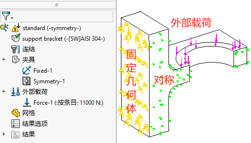
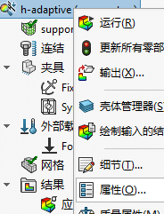
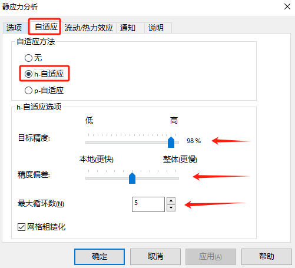
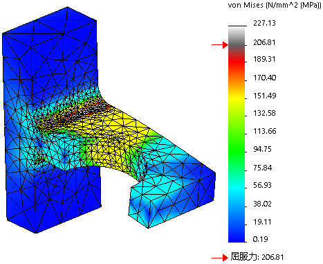
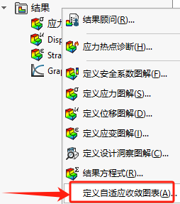
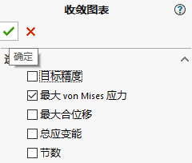
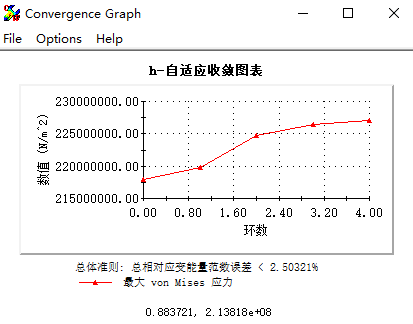
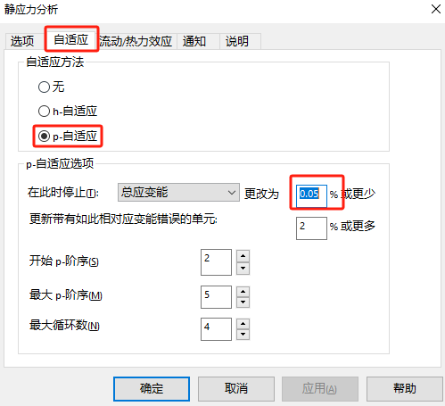
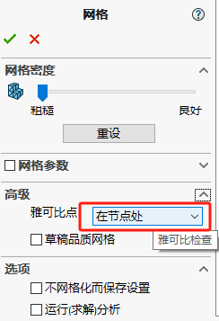

Simulation-自适应网格
自适应网格用于适应计算结果，并自动调整网格的方式，以达到精确化结果的目的。当然，这个在之前的课程中，我们是通过【局部网格控制】来手动实现网格细化精确结果。
本章我们将利用【自适应网格】方法来自动自动细化网格（h自适应）或自动增加网格阶数（p自适应），以达到更加精确的结果。
标准分析
新建算例
新建静应力分析算例，根据前面所学知识，设置如下分析条件。
标准网格
利用默认网格计算结果

h-自适应
新建算例
在仿真设计树的算例【右键-属性-自适应】自适应方法选择“h-自适应”。
h自适应方法里，可以设置“目标精度”即，最后两次结果比大于98%，则完成h自适应的最终结果。
或者是按照“最大循环次数”进行每次的循环（当5次循环结束后，可能还可以继续【运行】再一个5次循环，直到98%的目标精度才停止）。
运行结果
运行，循环计算结果
![h自适应](教程13-自适应网格/h自适应.gif”>
查看h-自适应收敛的过程表格
  p-自适应
新建算例
在仿真设计树的算例【右键-属性-自适应】自适应方法选择“p-自适应”。
p自适应方法不同于h自适应（细化网格的方式求解），p自适应是通过增加单元格的阶数进行求解。而对照h自适应方法，这里的结束条件也是按结果比，和手动设置的阶数数量。
修改网格设置
